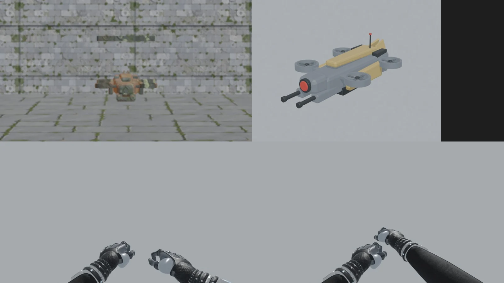

Devlog · our FPS
The pinky finger incident 🤖

The Pinky Problem
In our latest push for our FPS, we attempted a massive architectural simplification. To streamline our animation pipeline and reduce overhead, we decided to unify all weapon classes to utilize a single, standardized pair of robot arms.
We relied heavily on our automated coding agents to handle the re-skinning and pose-matching logic. On paper, the logic was sound. However, the first implementation hit a significant snag: while the main digits followed the new animation controller perfectly, the little finger simply stopped following the pose. It’s as if the solver decided the pinky was optional for the mission.
As you can see in the attached contact sheet, the environment and drone assets are looking stable, but the first-person view of the hands reveals the glitch. The robotic hand is currently missing its structural integrity in the smallest digit. We are back to fine-tuning the constraints to ensure every finger—even the tiny ones—stays attached to the logic.
DeepSage #IndieDev #GameDev
Written with AI assistance. The pictures are real screenshots of the game in development.